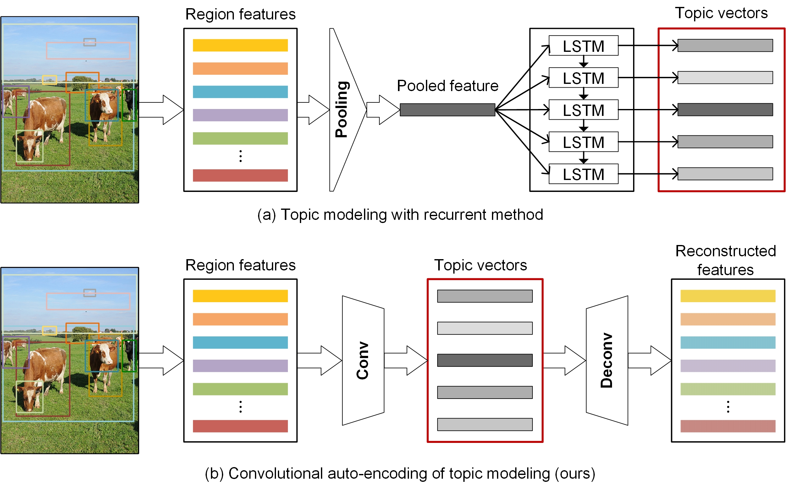
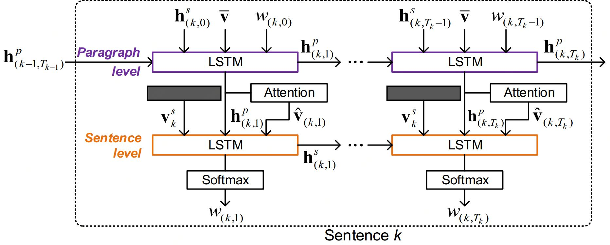

Paragraph Generation
2018.08 - 2019.02期间在JD时关于paragraph generation的实验记录和心得体会。

Paragraph generation：
根据一幅图生成一段话
ground truth中句数不固定，实验时往往为了performance固定生成6句（由数据集决定）
目录
数据及处理
主要涉及数据集，paragraph文本的处理和特征的提取。
Dataset
Standford Paragraph Dataset
Part of Visual Genome and annotated by Fei-Fei Li’s group. The json file and the split files can be found at the aforementioned website. One can download the images according to the urls provided in the json file which looks like:
[{"url": "https://cs.stanford.edu/people/rak248/VG_100K/2356347.jpg", "image_id": 2356347, "paragraph": "A large building with bars on the windows in front of it. There is people walking in front of the building. There is a street in front of the building with many cars on it. "}, …].MS COCO
MS COCO is used for pre-training of all the models.
Data Pre-processing
Build ground truth
(change gt into evaluation format)
Build vocabulary
(As we pretrain models with COCO data, the vocabulary is built with COCO training captions [all 11415 words, omitting words < 4]. The original version written by me is slow, referring to Ruotian Luo’s code would be better.)
Build encode data
(to save the image ids/image feat ids/encoded captions in to a json file for training)
Feat Extraction
Similar to the Bottom-Up feature, we use VGG-16 instead of Resnet. The network and the solver is provided at the the Bottom-Up website, but some modifications are needed. The model is trained on Visual Genome with 90w iterations.
Then we extract COCO feature and Stanford Paragraph feature with the saved model. Each feature has the size of [50, 4096], 50 means 50 regions, same as baselines.
模型及训练
The Proposed CAE-LSTM
全称是Convolutional Auto-Encoding plus LSTM（姚老师起的）。
CAE for Topic Modeling
CAE用于从图像region feature中提取topic信息，topic数量和最大句子数量一致。以往的paper大多是用LSTM循环接收mean pooling feature，每个时刻的输出作为topic，如下图：在CAE中，topic vectors通过卷积生成，并通过反卷积重构出原来的feature。在本次的实现中，只用了一个卷积层，后加了Relu激活函数。
Two-level LSTM-based Paragraph Generator
LSTM也就是decoder部分用的是Top-Down Attention。
双层LSTM结构。
第一层paragraph-level LSTM（P-LSTM），input是上一时刻sentence-level LSTM（S-LSTM）状态、mean-pooled region feature、词的embedding concat到一起，output是新的状态。
计算attention，根据P-LSTM state、topic vector和region feature计算attention（MLP attention）。
第二层sentence-level LSTM（S-LSTM），input是topic vector、P-LSTM输出的状态、attended feature concat到一起，output一方面是新的状态，另一方面去生成词。
需要注意的是，paragraph state的传递于整个段落，而sentence state只在句内传递。也就是说S-LSTM每句开头都initialize为0，而P-LSTM只在段首initialize。
Self-critical Training with Coverage Reward
用coverage reward来force model hit到更多的object。结合coverage reward和CIDEr值作为reinforcement learning的reward。
具体实现
CAE
Encoding and decoding：
1
2
3
4
5
6
7
8
9
10
11
12
13
14
15
16
17
18
19
20
21
22
23
24
25
26
27with tf.variable_scope("CNN") as scope:
biasInit = None
weightInit = tf.constant_initializer(0.001, dtype=tf.float32)
X = tf.expand_dims(image_feat_emb, 3)
# from feature to topics
Xhat = layers.conv2d(X,
num_outputs=6,
kernel_size=self.kernel,
stride = [1,2],
weights_initializer = weightInit,
biases_initializer=biasInit,
activation_fn=tf.nn.relu,
padding = 'VALID',
reuse = None)
# back to feature
if self.W_rec > 0:
X_rec = layers.conv2d_transpose(Xhat,
num_outputs=1,
kernel_size=self.kernel,
stride = [1,2],
biases_initializer=None,
activation_fn=None,#tf.nn.relu,
padding = 'VALID',
reuse = None)
Xhat = tf.squeeze(Xhat)From feature to topics:
region feature原来的dim是[b，50, 4096] (VGG16 feature);
过一层fc到[b，50, 1024] (为了节省显存)；
expand到[b，50，1024，1]；
kernal size是[50，26]，stride是[1，2]，filter number/topic number为6；
得到的topic matrix[b，1，500，6];
Back:
kernal size是[50，26]，stride是[1，2]，filter number为1；
得到的feature matrix[b，50，1024，1]；
Reconstruction loss:
1
2if self.W_rec > 0:
loss += tf.losses.absolute_difference(X, X_rec, weights=self.W_rec)/self.batch_size也试过l2_loss，效果不如l1。W_rec这里用的是8.0。计算loss是就过一层fc之后的feature和重构的feature之间，不是最初的4096D的feature。
LSTM
attention部分：
1
2
3
4
5
6
7h_att = tf.nn.tanh(image_feat_emb_1 + \
tf.expand_dims(tf.matmul(h_1, att_wh_1), 1) + \
tf.expand_dims(tf.matmul(Xhat[:,:,i], att_wh), 1))
out_att = tf.reshape(tf.matmul(tf.reshape(h_att, [-1, 512]), att_w_1), \
[-1, self.region_feat_num])
beta = tf.nn.softmax(out_att)
feat_att_1 = tf.reduce_sum(image_feat_emb * tf.expand_dims(beta, 2), 1)其他部分就不放了，LSTM常规操作。
Self-critical
取字典中前1000个高频名词，用nltk判断词性：
1
2
3
4
5
6
7
8
9
10
11
12
13
14
15
16
17from stemming.porter2 import stem
import nltk
lines = open(r'../coco_vocab.txt', 'r').readlines()
word_list = []
noun_id = 0
for line in lines:
if len(word_list) < 1000:
if not line == '\n':
word = line.split('\t')[0]
if word not in ['<PAD>', '<S>', '</S>', '<UNK>'] and nltk.pos_tag([word])[0][1] == 'NN':
word_stem = stem(word)
if word_stem+'\n' not in word_list:
word_list.append(word_stem+'\n')
noun_id += 1
else:
break计算coverage reward：
1
2
3
4
5
6
7
8
9
10
11
12
13
14
15
16
17def compute_coverage(self, batch_para, gt_noun_vector):
noun_vector = np.zeros((np.shape(batch_para)[0], 1000))
for idx, para in enumerate(batch_para):
for word_id in para:
if str(word_id) in self.word_id2noun_id.keys():
noun_id = self.word_id2noun_id[str(word_id)]
noun_vector[idx, noun_id] = 1
mul = np.multiply(noun_vector, gt_noun_vector)
gt_noun_sum = np.sum(gt_noun_vector, 1)
noun_sum = np.sum(noun_vector, 1)
reward = np.divide(np.sum(mul, 1), np.where(gt_noun_sum!=0, gt_noun_sum, 1))
noun_list = np.where(noun_vector[0]==1)[0]
gt_noun_list = np.where(gt_noun_vector[0]==1)[0]
return reward, noun_list, gt_noun_list简单说来就是生成句子中出现的gt中的obj/gt中的obj，这里的obj都是指top1k的。写的时候precision/recall/F1值都试过，F1会均衡一点，R会使句子变长。最后用的是R，然后用CIDEr来平衡。
其他细节
- batch size：32 （16好像也差不多，但大了会差些）
- LSTM hidden size：1000
- word emb size：1000
- dropout：0.5
- vocab size：11415 （COCO vocabulary）
- max words：20（算上头尾）
- max sentences：6
- image feat dim：4096
- learning rate：1e-4 for cross entropy，5e-6 for RL
- pretrain epoches：20左右就可以。lr=1e-3，每3epoch降一次
- Cross entropy loss training epoches：60左右。V100，占约16G显存。
- Self-critical training epoches：看情况吧，不需要很久。P40，占约22G显存。
Discussion
CAE
关于结构设计
- 当时也试过把层加深一点，或者加一个residual block，可惜效果不好。不知道是不是我实现的问题。
- 除了从50个region卷到6个topic，也试过先mean pooling到一个vector，再反卷成6个topic（reconstruction是继续反卷成50个feature），效果也不错。用于不同的feature时表现不一致，用resnet feature就是后者要更好一点。
- Kernel size最后用的是[50, 26]，但当时好像从6～196都试过，没有明显的差异，所以就选了26，那样得到的topic dim是500比较舒服。也试过不是在feature dim上卷，也就是第一维小于50，这样一是会涉及feature排序的问题，二是效果不好。
关于feature排序
实验用的是按class score排序的，不是按roi score排序的。后来试过把这个feature random以及用按roi score排序的。
| metrics | CIDEr | METEOR | B4 | B1 |
|---|---|---|---|---|
| class | 22.86 | 18.35 | 9.33 | 41.55 |
| random | 23.08 | 18.24 | 9.28 | 41.67 |
| roi | 22.30 | 18.08 | 8.84 | 40.44 |
关于效果
重构是有一定效果的，但是不是非常的大。而且受feature的影响可能会有点不太稳定。
| metrics | CIDEr | METEOR | B4 | B1 |
|---|---|---|---|---|
| no_rec | 22.13 | 18.09 | 9.14 | 41.35 |
| rec | 22.86 | 18.35 | 9.33 | 41.55 |
- 关于细节
- 本来conv和deconv都是有一个relu的，但后来yehao提示这样子，原feature不是非负，但重构的feature非负了，就不对了。
- 把relu去掉，效果差不太多。也试过再加一层fc重构到最初的feature，效果不好。还试过最初feature emb的地方就加relu，效果也不好。这是后来论文提交以后的实验，都没有细调loss权重，可能有关。
LSTM
关于结构设计
基本是参考bottom-up的结构，区别是第二个LSTM中输入了topic vector。本来想做成paragraph LSTM也只在句内传递状态，但是效果就是没有段落内传递效果好。
关于细节
- 实际实现中用的是固定把第20时刻的P-LSTM状态作为下一句的初始，理论上这样是没道理的，但是也试过传递结束符之后的状态，但结果就是不好。
- 算attention时加不加topic vector好像区别不大。
Self-critical Training
关于reward设计
想到coverage的原因纯粹是因为METEOR结果不够高，想弥补一下。纯用coverage句子会越来越长，句子长了之后METEOR结果自然就高了。但是久了必然会崩掉，所以加了CIDEr。
关于细节
- 用CIDEr的时候不能一边用teacher forcing（之前训练discriminator时一边tearcher forcing为了让model参数不变太多），会影响效果。
- 不行的时候可以再把learning rate调小一点，有的数据集就是要小一点的。
关于效果
用CIDEr会让CIDEr和Bleu变得很高，但是METEOR涨的不多，甚至后面会降。所以要加coverage一起提供reward。但光用这俩METEOR还是会差一点，于是后面迫不得已限制生成相同trigram的概率，见下面第二点。
Important points
对feature用了batch norm，在最初对feature做处理的时候。在这套code里面好像很重要。
生成的时候降低生成同样三元组的概率。试过直接将概率降为0以及降低概率，降低的效果更好一些。因为tf不能直接改tensor值，只能借beam search的代码写。
1
2
3
4
5
6
7
8
9
10
11
12
13
14
15
16
17
18
19
20
21
22
23
24
25
26
27
28
29
30
31
32
33if trigram_force and j >= 3:
if constraint_type == 'reduce_prob':
prev_two = (sentence[-3], sentence[-2])
current = sentence[-1]
if prev_two in trigrams:
trigrams[prev_two].append(current)
else:
trigrams[prev_two] = [current]
mask = np.zeros_like(word_probabilities)
prev_two = (sentence[-2], sentence[-1])
if prev_two in trigrams:
for wo in trigrams[prev_two]:
mask[wo] += 1
word_probabilities -= alpha*mask#(alpha*0.693)*mask
elif constraint_type == 'set_zero_prob':
prev_two = (sentence[-3], sentence[-2])
current = sentence[-1]
if prev_two in trigrams:
trigrams[prev_two].append(current)
else:
trigrams[prev_two] = [current]
prev_two = (sentence[-2], sentence[-1])
if prev_two in trigrams:
for wo in trigrams[prev_two]:
word_probabilities[wo] = math.log(1e-12)
else:
print ('Trigram Contraint Type Error!')testing的ground truth切成6句再做evaluation，虽然baseline paper里没写，但他们都是这么做的。（邮件问到的）
生成时没有判断生成几句，直接用了6句，因为砍短会降低METEOR的performance。
后记
写到这里大大小小就差不多了，后面还会再写一篇整个过程中曾经出现的思路和做过的尝试。
感谢大师兄和pandy的全程指导，和男朋友一路的支持。
2019年3月8日
（END）